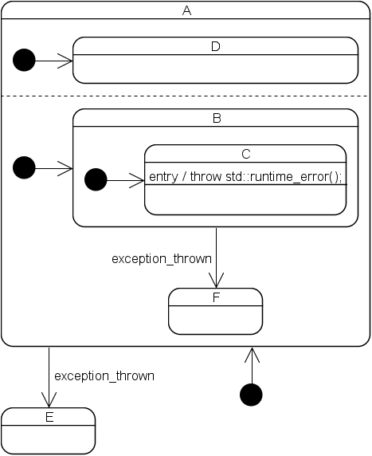

|
|
The Boost Statechart LibraryDefinitions |
The Boost.Statechart documentation uses a lot of terminology specific to state machines. Most of it is equal to the one used in the UML specifications. This document contains only definitions for terminology not used by the UML standard. A short tour around UML terminology can be found here.
The contexts of a state define its location in the state hierarchy. A
state's direct context is defined by what is passed as the
Context template parameter of the simple_state and
state class
templates. This can either be the state machine (which makes the state an
outermost state) or its direct outer state. A
state's indirect contexts follow from the direct context of its
direct context and the direct context of the direct context of its direct
context and so on. Examples:

The innermost common context of two states is the first direct or indirect context that both states have in common. Also known as Least Common Ancestor (UML).
An innermost state is a state that does not itself have inner states.
Also known as leaf state or simple state (UML). Note that boost::statechart::simple_state<>
is not a model of the UML simple state.
An in-state reaction is a reaction that neither exits nor enters any states. Also known as inner transition or internal transition (UML).
An outermost state is a state that does not itself have outer states. Note that an outermost state is different from the UML top state. A state machine can have an arbitrary number of the former but only exactly one of the latter. Boost.Statechart only supports outermost states.
An FSM library supports polymorphic events if events can inherit from each other without restrictions and if it allows the definition of reactions for leafs and nodes of the resulting event inheritance tree.
Example (using a hypothetical FSM library, as Boost.Statechart does not support polymorphic events):
struct EvButtonPressed : Event // node
{
/* common button pressed properties */
};
struct EvPlayButtonPressed : EvButtonPressed {}; // leaf
struct EvStopButtonPressed : EvButtonPressed {}; // leaf
struct EvForwardButtonPressed : EvButtonPressed {}; // leaf
If a state machine needs to react whenever any button (including
the ones that may be added in the future) is pressed, a reaction for
EvButtonPressed can be defined.
A reaction consists of all the side effects caused by the processing of one event. Reactions can be categorized as follows:
Note that it is possible to mix a reaction of type 1 with one of the other types (the in-state reaction is always executed first) but it is not possible to mix a reaction of type 2-4 with anything else but type 1.
A reaction is always associated with exactly one state type and exactly one event type.
A state is unstable from the moment when it has been entered until after its last direct inner state has been entered. A state is also unstable from the moment just before its first direct inner state is exited until right before the state itself is exited.
A state machine is unstable if at least one of its currently active states is unstable. This is the case during the following three operations:
Under normal circumstances a state machine has Run-To-Completion
semantics, that is, it is always stable before the machine returns to the
client or before the next event is dequeued. So, a state machine is usually
only unstable when it is busy processing an event and becomes stable again
right before it has finished processing the event. However, this can not be
guaranteed when entry, exit or transition actions fail. Such a failure is
reported by an event, which must be processed while the state machine is
unstable. However, exception event processing rules ensure that a state
machine is never unstable when it returns to the client (see state_machine<>::process_event()
for details).
Revised 29 December, 2006
Copyright © 2003-2006 Andreas Huber Dönni
Distributed under the Boost Software License, Version 1.0. (See accompanying file LICENSE_1_0.txt or copy at http://www.boost.org/LICENSE_1_0.txt)